I’m Jon, a game designer based in Tokyo. Driven by imagination and an obsessive attention to detail, I connect art direction, mechanics and game feel — from the first unusual idea to the timing of a single moment.
A solo dark-fantasy slot prototype built around a ribcage-shaped board. I use it to explore how visual constraints, probability and audiovisual timing can work together. Explore the playable build, design decisions and public source.
I use the cast to make the rules visible: ravens carry multipliers, blades cut symbols and the chest stores them.
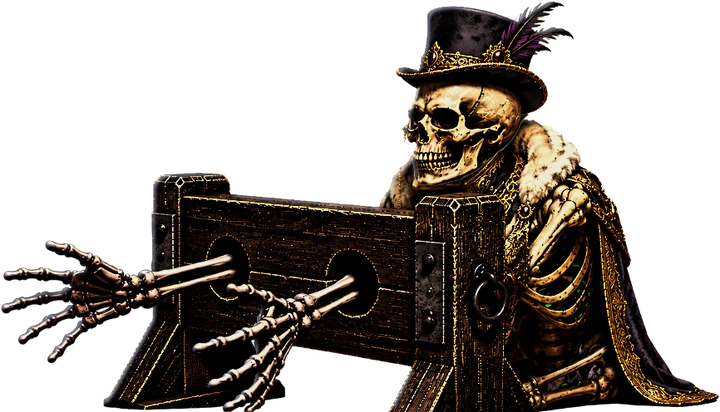
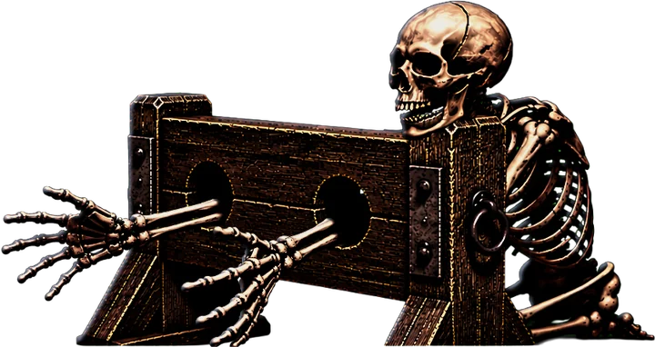
Nº 01 · Execution Bonus
The Condemned
Poor, Noble and Rich, chained in their stocks. The design assigns separate rewards to hands and heads, making what remains on the board visible as the bonus progresses.
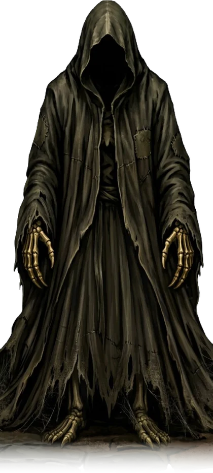
Nº 02 · Super Bonus
Death
Watches from the top of the machine. When the ribcage is complete, it may let go and take the board.
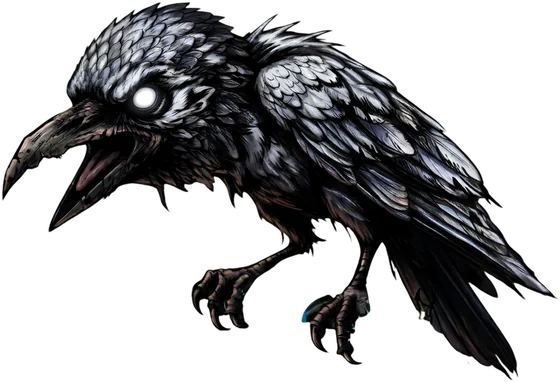
Nº 03 · Multipliers
The Raven
Cut it with a blade and it perches on the machine. Every raven on the same side raises the multiplier.
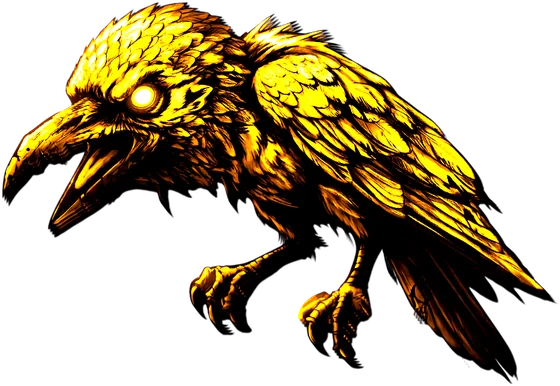
Nº 04 · The rare one
The Golden Raven
Rarer, and worth the wait: cut it and it perches golden, adding ×10, ×25 or ×50 to its side.
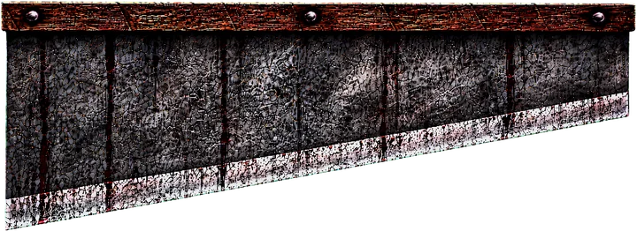
Nº 05 · Trigger
The Guillotine
Lands on the top reel to start the chain. Inside the bonus, it cuts the hands of every chained skeleton.
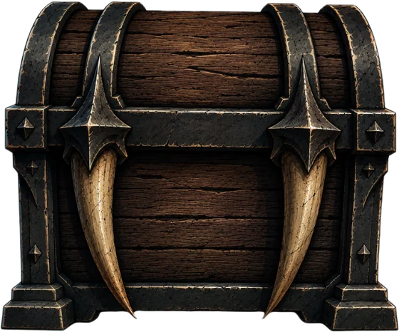
Nº 06 · Risk & reward
The Chest
Swallows every symbol a blade cuts. When it is full enough it opens: collect, or gamble it on the bone wheel.
Design notes · Ossuary Reels
What each system is there to do.
Each feature connects a visible action to a consequence: immediate risk, stored progress or another chance to play.
01 · Chest
Progress between payouts
A blade removes symbols and can break a winning line. Sending those symbols into the chest makes that loss contribute to a later event.
The collect-or-gamble choice changes the spread of possible outcomes. Its balance depends on the value of every wheel result, including bonus entries; cash prizes alone cannot establish whether the gamble is worthwhile.
A perched raven carries a multiplier. A stone hit turns its column wild and extends the chain, giving the player a visible cause for each extra spin.
The design uses decreasing hit chances to limit chain length. Golden ravens add larger multiplier jumps. Both need full-round simulation before their contribution to return and variance is established.
Three candles show the remaining chances. A guillotine cut pays and restores them, while collected hands raise the multiplier.
The aim is to make remaining time and accumulated value easy to follow. Reset frequency and multiplier growth must be tuned together, because each affects the length and cost of the bonus.
98% is an RTP design target, not a measured result. The case study separates design intent from validation still to do. Explore math & tuning →
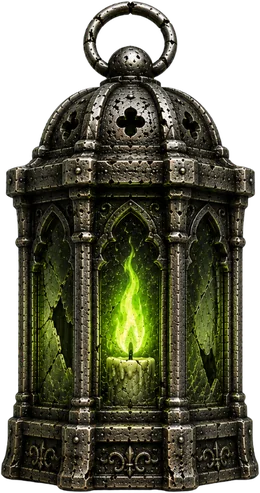
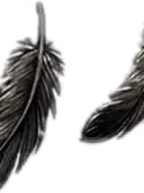
Art direction · Ossuary Reels
A world with its own language.
From ribcage concept to playable machine: a shared visual language across the board, characters and interface.
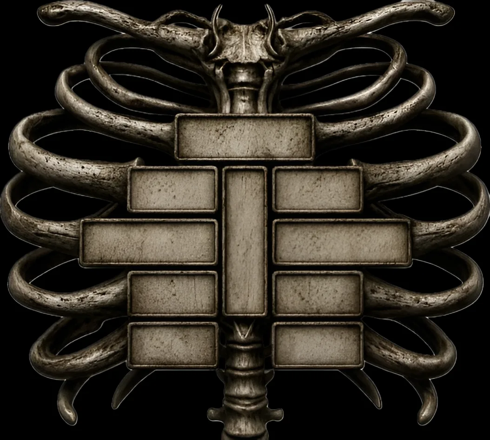
01 · Shape
Start with a silhouette.
The ribcage gives the board its identity and sets a constraint for the mechanics.
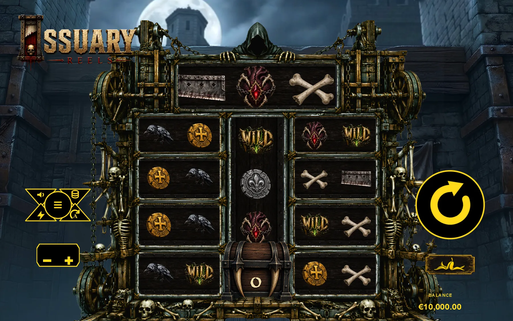
02 · Material & interface
Make the world playable.
Carry that structure into a machine with visible lanes, symbols and controls.
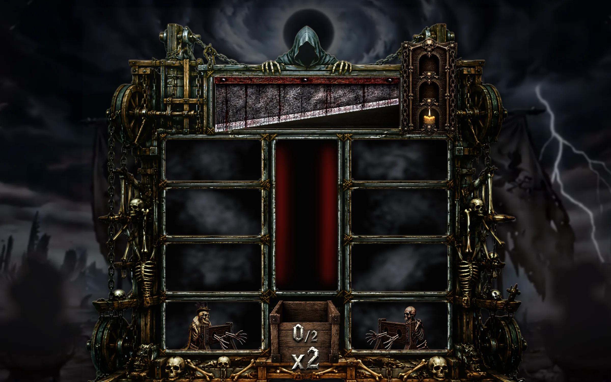
03 · Atmosphere
Let the scene carry the tension.
Bone, wood, darkness and gold connect the visual direction to the moment of play.
AI-generated visual assets, directed and selected by Jon Arbe. I specify shape, proportions, references and details, then refine prompts and compare variations. Read how I develop a visual brief →
Not every moment at the same intensity. Pauses, rhythm and sound help distinguish routine results from larger events. The counter breakdown shows one concrete timing change.
I threw away the whole first reel structure because it worked but didn’t feel right. Keeping the silhouette while revising the structure became a recurring design constraint.
I’m a game designer from Spain, based in Tokyo. Creativity and an obsession with detail drive how I work. I imagine worlds and mechanics together, then keep refining the shapes, sounds and pauses that give them character.
An original vision, from idea to playable. Ossuary Reels began with my own concept. The world, ribcage board, mechanics and creative direction are my ideas; I use AI-assisted tools to bring them into a playable form.
Obsessive about the details that shape play. I measure musical beats to place a counter’s final number, refine the raven’s silhouette and rework sequences until their timing supports the feeling I’m after.
Mechanics with a purpose. I connect rules, risk and reward to the experience I want to create, then iterate on what feels unclear or flat.
Art direction & game feel. I direct AI-generated visual assets through detailed prompts and repeated selection. Claude Code and Codex help implement my specifications; I review the behaviour in the prototype and request changes.
Spin to meet me
Three clues to how I think, create and work. Spin to explore.
I speakObsessed withAsk me about
Japanese
English
Spanish
Ravens
Details
Timing
Throwing work away
173 paylines
Life in Tokyo
I speak English.
I’m obsessed with details.
Ask me about my 173 paylines.
Behind the reels
Spain → Tokyo
Based in Tokyo. Spanish, English and Japanese (N4).
Creative ownership
Ossuary Reels began with my own world, board and mechanics. I direct the visuals and use AI-assisted tools to build and revise the experience.
The details I chase
A raven’s silhouette. A pause before a reel stops. The exact musical beat where a counter lands. Art, mechanics and timing are parts of the same idea.
Five spins. You clearly like this as much as I do. Let’s talk →
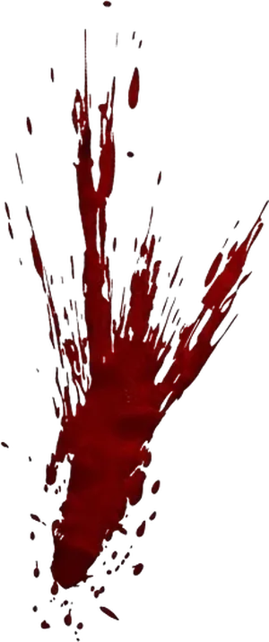
Work with me · Game design
A creative approach. A prototype you can inspect.
I’m looking for a game-design role where I can contribute concepts, develop mechanics and iterate with a team. Ossuary Reels shows how I turn a visual concept into connected mechanics, refine the rhythm of play and work through design constraints.
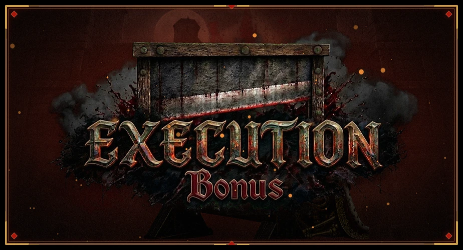
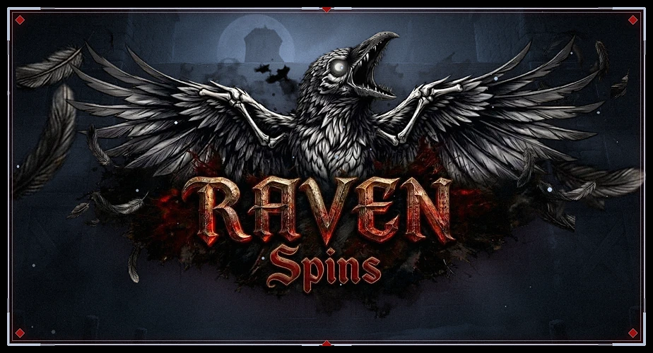
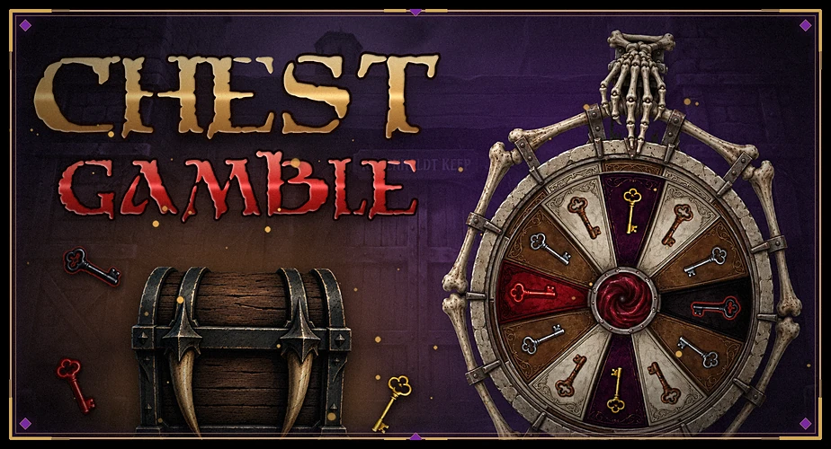
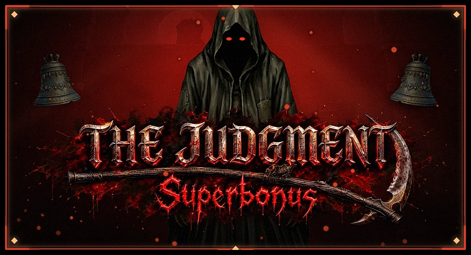
Game designNº 01
From concept to rules
An unusual idea needs a playable structure.
The ribcage board is an example of how I connect a visual idea to a layout, paylines and linked bonus features. The case study explains the intent and the compromises.
I’d like to walk through a mechanic with your designers, artists or engineers: the intended experience, the current implementation, the trade-offs and what I would test next.
Let’s talk about your game. I bring visual direction, connected mechanics and a hands-on approach to iteration. I’m looking for a remote junior game-design role.